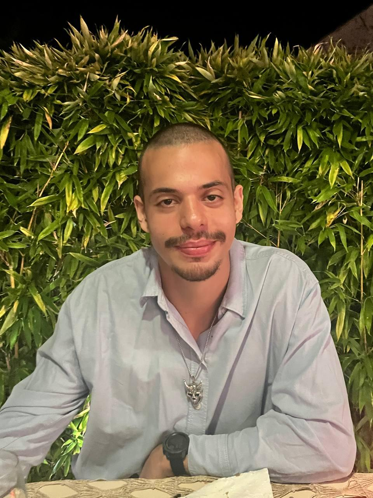

IT Support Engineer
BTS SIO Apprentice · IT Asset Management · Automation · N1/N2 Support
Specialized in multi-site IT operations with solid experience in L1/L2 support and infrastructure security. Automation-driven professional with multi-OS proficiency (Windows, macOS, Linux) and quadrilingual (FR, EN, PT, ES).
Polyglot: Portuguese (native), French, English, Spanish (C1).
About
Non-traditional path to IT: 6 years in retail and grocery, developing skills in team management, problem-solving, and adaptability. In 2022, returned to school at Université de Paris Cité for technical refresher (D.U, 15.9/20).
Enrolled in BTS SIO option SLAM at IPI since 2025, working at Contentsquare on varied missions: fleet management (1000+ machines), workstation deployments, automation (ITSync), and infrastructure projects (Content Caching Server, n8n). Goal: deepen expertise in architecture, MDM scripting, and systems security.
Areas of Expertise
Fleet Management
Jamf Pro, Intune, DriveStrike, Snipe-IT, ABM. Asset lifecycle, provisioning, decommissioning.
Automation
ITSync (Workday/Jamf/Intune sync), SnipeMate, n8n. Python, REST APIs, workflow automation.
Infrastructure
Apple Content Caching Server, Docker, Proxmox. Meraki monitoring, VPN/VLAN.
Security
CrowdStrike Falcon, Sophos, Okta SSO/MFA, FileVault/BitLocker encryption.